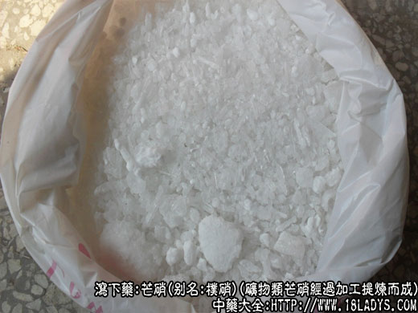

本品为常用中药。始载于《神农本草经》，原名朴硝。
别名：朴硝、皮硝、马牙硝。
来源：为矿物类芒硝，单斜晶系天然硫酸钠（含水）生成天包含钠离子和硫酸根子的内陆盐湖中和沿海盐滩上，及含硫酸钠的土壤中，与岩盐、食盐、石膏共生，经过加工提炼而成。
产地：主产于我国沿海各产盐地区及四川、内蒙、新疆等内陆盐湖、盐井、岩盐等地。
采收加工：选取天然结晶土硝或含有大量硫酸的土壤，加水溶解，放置，使杂质沉淀后过滤，收集滤液，加热浓缩，或日晒蒸发，使滤液含硫酸钠浓度提高到波美氏浓度计8～16度时，放冷后即自行结晶生成芒硝。芒硝在温度10～15℃时为结晶盛产期（故有夏产食盐，冬产芒硝的说法）。天然土硝和粗制朴硝含杂质较多，需进行精制提纯。提纯方法是将土硝溶解于清水中，加1/10的鲜萝卜片共煮，然后过滤除去萝卜和杂质，取滤液静置冷却，析出结晶。晾干即为纯净芒硝。主要成分含硫酸钠。
性状鉴别：纯净芒硝为结晶体棱柱状或长方形和小颗粒状，均呈无色透明体。质脆易折断，气无味苦咸。
本品含多量结晶水约占重量的56%，在温热干燥的空气中水分易蒸法损失，故应密闭保存，若露置则结晶表面风化而产生一层白色粉末（无水硫酸钠即玄明粉）。
本品溶于水或甘油（34℃时溶解度量大），不溶于醇。在温度32.4℃时即液化。在100℃时继续加热可将所含结晶水全部蒸发掉，而残留下44%无水硫酸钠（即玄明粉），再加热至886℃时又熔融而不分解。
取芒硝少许在火焰中燃烧，焰呈黄色。
芒硝水溶液加氯化钡溶液，立即产生白色的硫酸钡沉淀。
以青白色半透明块状结晶，无杂质者佳。
主要成分：芒硝主要成分硫酸钠，玄明粉为纯硫酸钠。
药理作用：主要为泻下作用。由于硫酸钠不易被肠壁吸收，在肠内溶解于水后形成高渗的盐溶液。因而使肠道保持大量水分，扩张肠道，引起肠蠕动增强而排便，因此，芒硝属于机械刺激性泻药。一般于服药后4小时～6小时排便，无肠绞痛等副作用。
玄明粉作用较芒硝缓和。
炮制：生用。
性味：入胃、大肠经。
功能：泻肠胃实热，润燥软坚。
主治：大便燥结，谵语发狂，外用治痈肿疮毒，咽痛口疮，目赤肿痛。
临床应用：1、用于实热便热，能润燥软坚，引起泻下，荡涤肠胃的实热积滞。常配伍大黄等药，例如当患者内热炽盛而且痞（上腹硬闷）、满（腹部胀满）、燥（粪燥且坚）、实（热积便秘）等表现时，须配大黄、厚朴、枳实，方如大承气汤。
大承气汤为强有力的泻下剂，作用比小承气汤强。实验证明，大承气汤能明显增加消化道推进性蠕动，故能促进排便，且在家兔实验中，观察到大承气汤能明显地促进人工肠套叠的还纳。近年来，我国广大医务工作者在对急性肠梗阻（主要是动力性肠梗阻）的中西医结合的非手术疗法中，应用加味大承气汤（大承气汤加炒莱菔子等），获得较好效果。但要注意辩证准确，确属热结，有腹痛剧烈，便秘、发热、尿赤、腹部拒按、脉沉数、舌苔黄燥等证候者才用。
如患者内热和大便燥结均较轻时，用芒硝配大黄、甘草便可，方如调胃承气汤。
2、用于小儿急性咽喉炎。有咽喉肿同时，配冰片、硼砂等，研末吹喷患部。
此外，芒硝在引起泻下的同时，能促进子宫收缩，因此，也用于下死胎，可酌情用芒硝24g加平胃散（苍术、厚朴、陈皮、甘草），促进死胎排出。
使用注意：1、无实热者不宜用芒硝，年老体虚所致的便秘也不宜用芒硝、玄明粉。如属一般慢性病身体虚弱所致的便秘，需要使用时，也只宜在滋补剂中配伍加用。
2、治习惯性便秘一般不用芒硝、玄明粉。但加须加强泻下作用时，可在使用麻仁、蒌仁、杏仁的基础上，酌加玄明粉。
用量：常用量2.4～2g，冲服，玄明粉小剂量用2.4～4.5g，大剂用9～12g，如欲加强泻下作用，必要时可用至15～24g。
处方举例：1、大承气汤《伤寒论》：生大黄12g（后下），厚朴9g、枳实9g、玄明粉9g（冲），水煎服。
2、加味大承气汤《天津市南开医院》：川朴15～30g、炒莱菔子15～30g，枳壳15g，桃仁9g，赤芍15g，大黄15g（后下），芒硝9～15g（冲），水煎服。
3、调胃承气汤《伤寒论》：生大黄9g（后下）、生甘草3g、玄明粉6g（冲），水煎服。